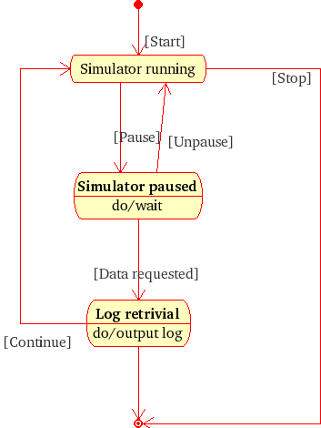
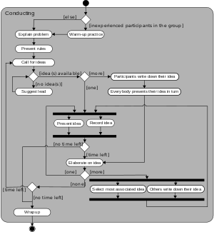
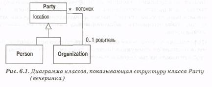
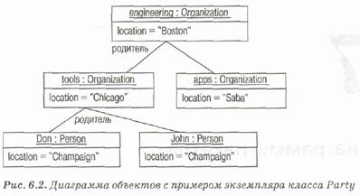
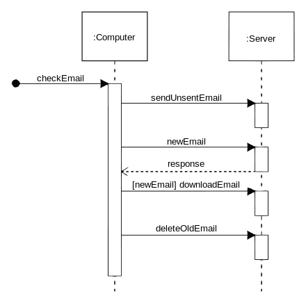
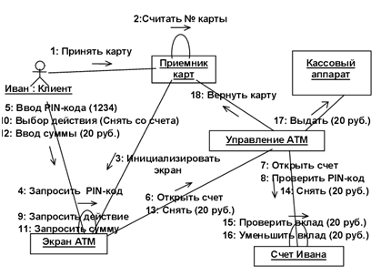
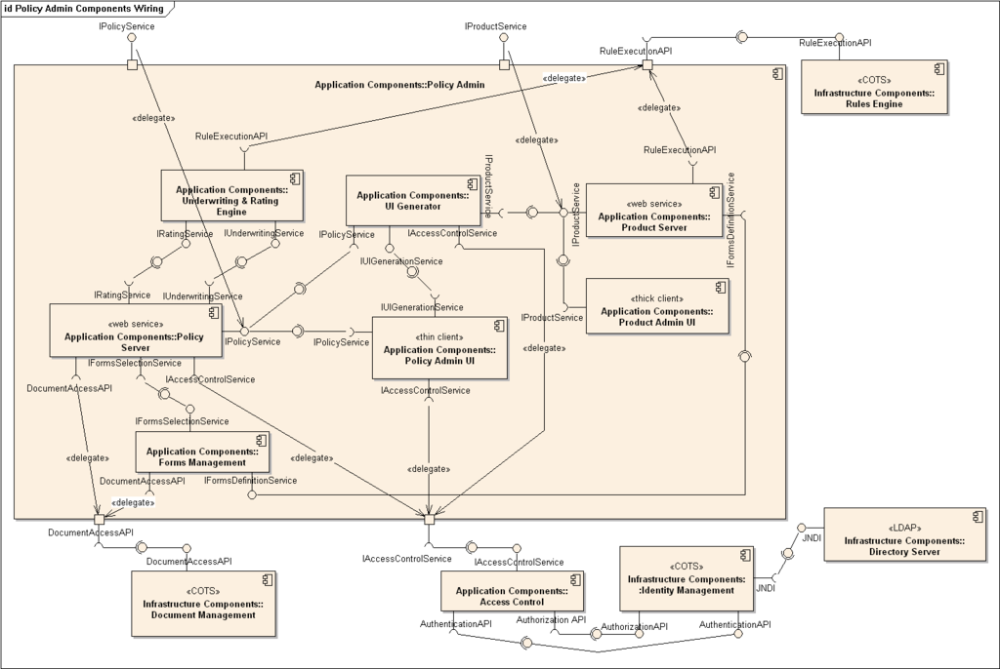
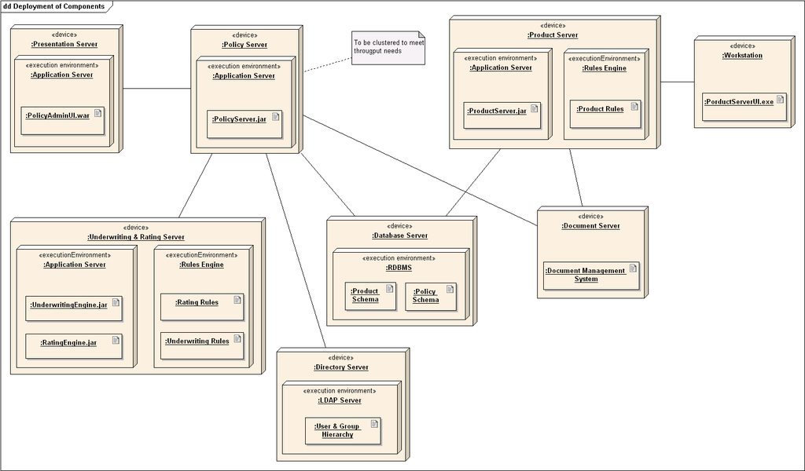

UML-диаграмма для задачи №1

Лагутенко Дмитрий, ИДБ-13-13
| HTML: | 3.2 | 4.01 | 5.0 | XHTML: | 1.0 | 1.1 |
Тег <form> устанавливает форму на веб-странице. Форма предназначена для обмена данными между пользователем и сервером. Область применения форм не ограничена отправкой данных на сервер, с помощью клиентских скриптов можно получить доступ к любому элементу формы, изменять его и применять по своему усмотрению.
Документ может содержать любое количество форм, но одновременно на сервер может быть отправлена только одна форма. По этой причине данные форм должны быть независимы друг от друга.
Для отправки формы на сервер используется кнопка Submit, того же можно добиться, если нажать клавишу в пределах формы. Если кнопка Submit отсутствует в форме, клавиша имитирует ее использование.
Когда форма отправляется на сервер, управление данными передается программе, заданной атрибутом action тега <form>. Предварительно браузер подготавливает информацию в виде пары «имя=значение», где имя определяется атрибутом name тега <input>, а значение введено пользователем или установлено в поле формы по умолчанию. Если для отправки данных используется метод GET, то адресная строка может принимать следующий вид.
http://www.htmlbook.ru/cgi-bin/handler.cgi?nick=%C2%E0%ED%FF+%D8%E0%EF%EE%F7%EA%E8%ED&page=5
Параметры перечисляются после вопросительного знака, указанного после адреса CGI-программы и разделяются между собой символом амперсанда (&). Нелатинские символы преобразуются в шестнадцатеричное представление (в форме %HH, где HH — шестнадцатеричный код для значения ASCII-символа), пробел заменяется на плюс (+).
Допускается внутрь контейнера <form> помещать другие теги, при этом сама форма никак не отображается на веб-странице, видны только ее элементы и результаты вложенных тегов.
<form action="URL">
...
</form>Также для этого тега доступны универсальные атрибуты и события.
Обязателен.
<form name=mainForm>
<table width="100%" cellspacing="0" cellpadding="4">
<tr>
<td align="right" width="100">Ваше имя</td>
<td><input type="text" onkeyup=changeButtonStatus() onchange=changeButtonStatus() name=name></td>
</tr>
<tr>
<td align="right" width="110">Ваша фамилия</td>
<td><input type="text" onkeyup=changeButtonStatus() onchange=changeButtonStatus() name=surname></td>
</tr>
<tr>
<td align="right" valign="top">Ваш телефон</td>
<td><input type="text" onkeyup=changeButtonStatus() onchange=changeButtonStatus() name=phone></td>
</tr>
<tr>
<td align="right" valign="dop">Адрес места жительства</td>
<td><input type="text" onkeyup=changeButtonStatus() onchange=changeButtonStatus() name=address></td>
</tr>
<td><input type=button onclick="alert('Ваша информация не отправлена на сервер, потому что сервера нет!')" value="Отправить" name=send></td>
</tr>
</table>
</form>
<script language="JavaScript">
var f=document.mainForm;
function changeButtonStatus(){
f.send.disabled=(f.name.value && f.surname.value && f.phone.value) ? false : true;
}
changeButtonStatus();
</script>
UML – это унифицированный графический язык моделирования для описания, визуализации, проектирования и документирования ОО систем. UML призван поддерживать процесс моделирования ПС на основе ОО подхода, организовывать взаимосвязь концептуальных и программных понятий, отражать проблемы масштабирования сложных систем. Модели на UML используются на всех этапах жизненного цикла ПС, начиная с бизнес-анализа и заканчивая сопровождением системы. Разные организации могут применять UML по своему усмотрению в зависимости от своих проблемных областей и используемых технологий.
Использование UML не ограничивается моделированием программного обеспечения. Его также используют для моделирования бизнес-процессов системного проектирования и отображения организационных структур. UML позволяет также разработчикам программного обеспечения достигнуть соглашения в графических обозначениях для представления общих понятий (таких как класс, компонент, обобщение (generalization), объединение (aggregation) и поведение, и больше сконцентрироваться на проектировании и архитектуре.
Круг, обозначающий начальное состояние.
Окружность с маленьким кругом внутри, обозначающая конечное состояние (если есть).
Скруглённый прямоугольник, обозначающий состояние. Верхушка прямоугольника содержит название состояния. В середине может быть горизонтальная линия, под которой записываются активности, происходящие в данном состоянии.
Стрелка, обозначающая переход. Название события (если есть), вызывающего переход, отмечается рядом со стрелкой. Охраняющее выражение может быть добавлено перед «/» и заключено в квадратные скобки (название_события[охраняющее_выражение]), что значит, что это выражение должно быть истинным, чтобы переход имел место. Если при переходе производится какое-то действие, то оно добавляется после «/» (название_события[охраняющее_выражение]/действие).
Толстая горизонтальная линия с либо множеством входящих линий и одной выходящей, либо одной входящей линией и множеством выходящих. Это обозначает объединение и разветвление соответственно.
Пример:
Прямоугольники с закруглениями — действия
Ромбы — решения
Широкие полосы — начало (разветвление) и окончание (схождение) ветвления действий
Чёрный круг — начало процесса (начальный узел)
Чёрный круг с обводкой — окончание процесса (финальный узел)
Стрелки идут от начала к концу процесса и показывают потоки управления или потоки объектов (данных).
Пример:
Диаграмму объектов можно использовать для отображения одного из вариантов конфигурации объектов. (На рис. 6.1 показано множество классов, а на рис. 6.2 представлено множество связанных объектов.) Последний вариант очень полезен, когда допустимые связи между объектами могут быть сложными.
Можно определить, что элементы, показанные на рис. 6.2, являются экземплярами, поскольку их имена подчеркнуты. Каждое имя представляется в виде: имя экземпляра : имя класса. Обе части имени не являются обязательными, поэтому имена John, : Person и aPerson являются допустимыми. Если указано только имя класса, то необходимо поставить двоеточие. Можно также задать значения и атрибуты, как показано на рис. 6.2.
Строго говоря, элементы диаграммы объектов – это спецификации экземпляров, а не сами экземпляры. Причина в том, что разрешается оставлять обязательные атрибуты пустыми или показывать спецификации экземпляров абстрактных классов. Можно рассматривать спецификации экземпляров (instance specifications) как частично определенные экземпляры.
Пример: 
Основными элементами диаграммы последовательности являются обозначения объектов (прямоугольники с названиями объектов), вертикальные «линии жизни» (англ. lifeline), отображающие течение времени, прямоугольники, отражающие деятельность объекта или исполнение им определенной функции (прямоугольники на пунктирной «линии жизни»), и стрелки, показывающие обмен сигналами или сообщениями между объектами.
На данной диаграмме объекты располагаются слева направо.Пример:

На диаграмме кооперации представлена вся та информация, которая есть и на диаграмме последовательности, но кооперативная диаграмма по-другому описывает поток событий. Из нее легче понять связи между объектами, однако, труднее уяснить последовательность событий.
На кооперативной диаграмме так же, как и на диаграмме последовательности, стрелки обозначают сообщения, обмен которыми осуществляется в рамках данного варианта использования. Их временная последовательность указывается путем нумерации сообщений.
Пример:
Основные сведнения:
Компоненты связываются через зависимости, когда соединяется требуемый интерфейс одного компонента с имеющимся интерфейсом другого компонента. Таким образом иллюстрируются отношения клиент-источник между двумя компонентами. Зависимость показывает, что один компонент предоставляет сервис, необходимый другому компоненту. Зависимость изображается стрелкой от интерфейса или порта клиента к импортируемому интерфейсу. Когда диаграмма компонентов используется, чтобы показать внутреннюю структуру компонентов, предоставляемый и требуемый интерфейсы составного компонента могут делегироваться в соответствующие интерфейсы внутренних компонентов. Делегация показывается связь внешнего контракта компонента с внутренней реализацией этого поведения внутренними компонентами.Пример:

Узлы представляются как прямоугольные параллелепипеды с артефактами, расположенными в них, изображенными в виде прямоугольников. Узлы могут иметь подузлы, которые представляются как вложенные прямоугольные параллелепипеды. Один узел диаграммы развертывания может концептуально представлять множество физических узлов, таких как кластер серверов баз данных.
Существует два типа узлов:Узел устройства
Узел среды выполнения
Узлы устройств — это физические вычислительные ресурсы со своей памятью и сервисами для выполнения программного обеспечения, такие как обычные ПК, мобильные телефоны. Узел среды выполнения — это программный вычислительный ресурс, который работает внутри внешнего узла и который предоставляет собой сервис, выполняющий другие исполняемые программные элементы.Пример:
